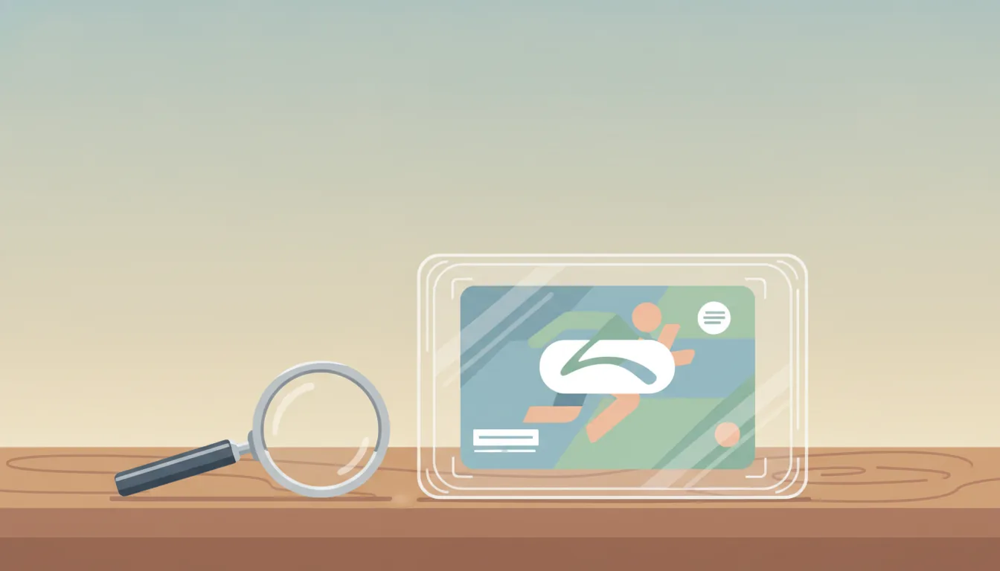

スポーツカードのグレーディング基礎知識と選び方
公開日: 2026-08-30
本ページのリンクには一部アフィリエイトリンクが含まれます(#PR)。
🔍 グレーディングとは何か、まず仕組みを知る
スポーツカードを集めていると、必ずと言っていいほど「グレーディング」という言葉に出会う。これはカードの状態を第三者機関が客観的に評価し、専用ケースに封入して数値化するサービスのことだ。カード表面のキズ、角の傷み、センタリング(絵柄の位置のズレ)、コーティングの状態など複数の項目をチェックし、10点満点などの段階で評価される仕組みになっている。
評価が数値化されることで、コレクター同士の取引がしやすくなるというメリットがある。状態の解釈が人によってバラバラだと売買のたびにトラブルが起きやすいが、共通の基準があれば話が早い。ただし業者によって基準の厳しさや評価軸に差があるため、同じ状態のカードでも結果が変わることがある点は頭に入れておくとよい。
🏢 主要なグレーディング業者の特徴を比較する
海外を中心に複数のグレーディング会社が存在し、それぞれ知名度や得意分野が異なる。老舗として長い実績を持つ業者もあれば、比較的新しく参入して独自のサービスを展開する業者もある。選ぶ際には次のような視点を持つと判断しやすい。
- 対応しているカードの種類(トレーディングカード全般か、特定ジャンルに強いか)
- 鑑定にかかる期間と料金プランの幅
- 市場での流通量や、取引時の認知度
- ケースのデザインや保管のしやすさ
どの業者が「正解」ということはなく、目的によって向き不向きがある。長期保管を重視するのか、取引のしやすさを優先するのかで選び方は変わってくる。
📮 依頼から返却までの一般的な流れ
グレーディングを依頼する場合、まずカードを業者へ送付し、プランに応じた鑑定期間を経て結果とともに返却される、という流れが一般的だ。プランによって日数や料金が段階的に設定されていることが多く、急ぎで結果を知りたい場合ほど費用がかさむ傾向にある。
送付時には輸送中の破損対策も欠かせない。カードスリーブや硬質ケースで保護したうえで、緩衝材を使って梱包するのが基本的な考え方だ。海外業者に依頼する場合は国際輸送になるため、追跡可能な配送方法を選ぶなど、紛失リスクへの備えも意識しておきたい。
⚠️ グレーディングに出す前に確認したい注意点
鑑定に出せば必ず高い評価が得られるわけではない。むしろ、もともとの状態がそのまま数値に反映されるだけなので、期待していたより低い評価になることも珍しくない。事前にルーペなどでセンタリングや角の状態を自分でも確認しておくと、結果を受け止めやすくなる。
また、鑑定・封入後はケースを開封できない、あるいは開封すると評価が無効になる場合が多い。一度封入されたカードは基本的にそのままの状態で保管・取引されることになるため、「封入前に自分の目で状態を見ておく」という意識が大切になる。
費用面も見落とせないポイントだ。鑑定料に加えて送料や保険料がかかることが多く、カード自体の価値と鑑定コストのバランスを考えて依頼するかどうかを判断したい。
💰 グレーディングと相場の関係を理解する
高い評価を得たカードは、未鑑定のカードに比べて取引価格が上がりやすい傾向がある。ただしこれはあくまで過去の取引傾向であり、将来の価格上昇を保証するものではない。人気選手の引退や成績、カードの発行枚数など、状態以外の要素も相場に大きく影響する。
「評価が高い=今後も高値が続く」と単純に考えるのは避けたい。相場は需要と供給のバランスで変動するものなので、購入や鑑定を検討する際は複数の視点から情報を集めることをおすすめする。
🔰 初心者向け:最初の一枚をどう選ぶか
これからグレーディングを試してみたいという人は、まず自分が集めているカードの中で思い入れのある一枚、あるいは比較的状態が良さそうな一枚から始めてみるとよい。高額なカードをいきなり鑑定に出すより、費用感や流れを掴む意味でも手頃なカードから経験しておくと安心感がある。
複数枚まとめて依頼すると割引が適用される業者もあるので、依頼枚数や予算に応じてプランを比較検討するのも一つの方法だ。
❓ よくある質問
Q. グレーディングに出せば必ず価値が上がりますか?
状態が良ければ評価が高くなりやすい傾向はありますが、価値の上昇を保証するものではありません。評価後も相場は市場の需給によって変動します。
Q. 未開封のカードと開封済みのカード、どちらを鑑定に出すべきですか?
未開封の状態を保ったまま鑑定に出す人が多いですが、必須ではありません。自分がどのような形でコレクションを楽しみたいかによって判断してよいでしょう。
Q. 鑑定結果に納得できない場合はどうすればいいですか?
業者によっては再鑑定や異議申し立ての制度を設けている場合があります。依頼前に各社の規約を確認しておくと安心です。
この記事でおすすめしたいアイテム
 PR
PR
 PR
PR
 PR
PR
本ページのリンクには一部アフィリエイトリンクが含まれます(#PR)。